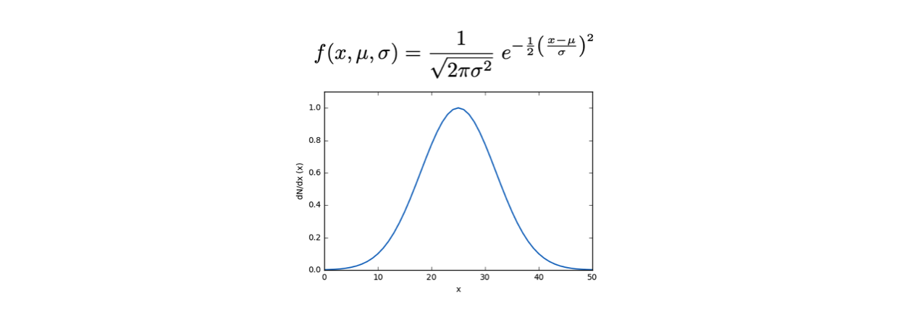

Lezione 9: la verosimiglianza
Contents
Lezione 9: la verosimiglianza¶
9.1 La verosimiglianza¶
Tutta l’informazione che caratterizza un esperimento, che riassume sia le assunzioni teoriche che le misure effettuate, è inscritta nella verosimiglianza o likelihood, definita come il prodotto del valore della distribuzione di densità di probabilità calcolata per ogni misura effettuata:

La likelihood è funzione sia delle misure che dei parametri, tuttavia si evidenzia la dipendenza dai parametri perché a misure finite i dati sono immutabili.

9.1.1 Un modello che descrive i dati¶
Un modello è una distribuzione di probabilità f o una legge g alla quale ci si aspetta che le misure obbediscano.
I risultati delle misure sono variabili rispetto alle quali il modello dipende
Eventuali parametri da cui dipende il modello, che non sono misurati, sono detti parametri.
9.1.2 Distribuzioni di probabilità¶
Dato un insieme di misure reali xi definite su un insieme Ω indipendenti identicamente distribuiite, sappiamo che seguono una data distribuzione di densità probabilità, indicata genericamente come f(x, θ)
Questo significa che f(xi, θ) è la densità di probabilità che la misura avvenga nel punto xi dell’insieme di definizione Ω.
Il simbolo θ indica che la funzione di densità di probabilità f dipende da altri parametri oltre che x
θ può anche essere un vettore di parametri
Ad esempio, una distribuzione Gaussiana ha due parametri aggiuntivi, μ e σ: 
9.2 Il logaritmo della massima verosimiglianza¶
Spesso si utilizza per fare conti e nelle rappresentazioni grafiche il logaritmo della funzione di likelihood, indicato con in lettera corsiva minuscola:.

Infatti, siccome il logaritmo è una funzione monotona crescente, il comportamento della likelihood ed il suo logaritmo sono simili
Il logaritmo di un prodotto di termini è uguale alla somma dei logaritmi dei singoli termini
\[\log(\mathcal{L}(\theta;\vec{x})) = \log\left(\prod_{i=1}^N f(x_i,\theta)\right) = \sum_{i=1}^N \log\left(f(x_i,\theta)\right)\]Il logaritmo di un numero è più piccolo del numero stesso e varia su un intervallo minore rispetto alla variabilità del numero stesso, quindi operazioni con i logaritmi possono essere stabili numericamente
9.3 La costruzione di una likelihood¶
Si utilizzerà l’esempio della distribuzione esponenziale, con l’unico parametro τ come argomento aggiuntivo della verosimiglianza:
9.3.1 La distribuzione di probabilità e la funzione di likelihood¶
Sia la distribuzione di densità di probabilità che il calcolo della likelihood vanno scritte in codice sorgente:
double esponenziale (double x, double tau) { if (tau == 0.) return 1. ; return exp (-1. * x / tau) / tau ; }
il primo
ifserve a proteggere il programma da risultati infiniti
il calcolo della likelihood avrà in ingresso sia i dati, che il parametro di interesse:
double loglikelihood ( const vector<double> & data, double param ) { double result = 0. ; for (int i = 0 ; i < data.size () ; ++i) result += log (esponenziale (data.at (i), param)) ; return result ; }
in questo caso, si calcola il logaritmo del valore della densità di probabilità in ogni punto
(esempio 9.0)
9.4 Il disegno di una funzione di C++ con ROOT¶
Le funzioni di
C++si disegnano inROOTcon la classeTF1Perché un oggetto di tipo
TF1possa essere costruito con una qualunque implementazione in formato di codice sorgente, tutte le funzioni utilizzate devono avere lo stesso prototipo, in modo che la classeTF1sappia riconoscerne il comportamento:Double_t exp_R (Double_t * x, Double_t * par) ;
il primo argomento è un vettore che rappresenta il dominio della funzione: per una funzione mono-dimensionale la x quindi è
x[0]il secondo argomento è l’insieme dei parametri della funzione
9.4.1 La creazione di un oggetto di tipo TF1¶
Per la creazione di un oggetto di tipo
TF1che disegni una funzione diC++esiste un costruttore dedicato della classe:TF1::TF1 (const char * name, Double_t(*)(Double_t *, Double_t *) fcn, Double_t xmin = 0, Double_t xmax = 1, Int_t npar = 0, Int_t ndim = 1, EAddToList addToGlobList = EAddToList::kDefault )
I parametri di interesse per noi sono i primi 5:
const char * nameè l’identificativo interno aROOTdell’oggettoDouble_t(*)(Double_t *, Double_t *) fcnè la funzione scritta in codice sorgentexminè il minimo del dominio dove viene disegnata la funzionexmaxè il massimo del dominio dove viene disegnata la funzionenparè il numero di parametri della funzione
9.4.2 La preparazione della funzione TF1¶
la chiamata al costruttore, nel caso di una funzione esponenziale, ha quindi il seguente formato:
TF1 f_exp ("f_exp", exp_R, 0, 5 * t_zero, 1) ;
il numero di parametri è 1, perché corrisponde a t0
per attribuire un determinato valore al parametro si usa il metodo
TF1::SetParameterf_exp.SetParameter (0, t_zero) ;
il primo argomento è l’indice del parametro
il secondo argomento è il valore da impostare
nel caso la funzione abbia più di un parametro, si può utilizzare il metodo
TF1::SetParameters, che prende in ingresso un array di valori lungo quanto il numero di parametri della funzione